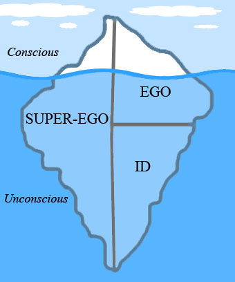
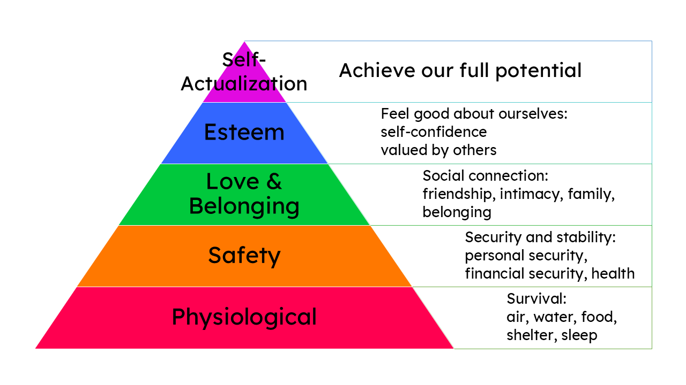
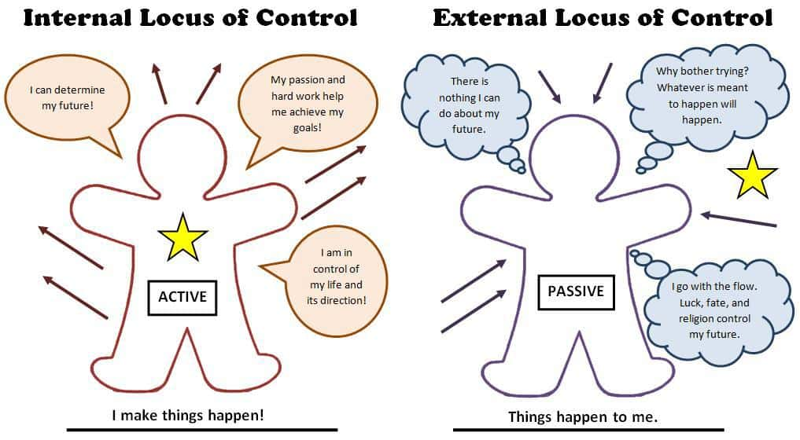
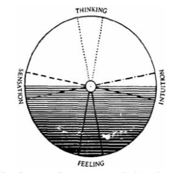

Personality
Ask a friend to describe someone you both know and you will hear the language of personality: she is so outgoing, he never gets rattled, they are impossible to pin down. Personality is the reason a person is recognizably themselves from one day to the next and from one room to another — the characteristic pattern of thinking, feeling, and behaving that travels with them. This chapter follows the century-long argument over where that pattern comes from: the hidden conflicts Freud placed in the unconscious, the growth-seeking self of the humanists, the handful of dimensions the trait theorists count, and the loop between mind and situation the social-cognitive theorists describe. It ends with the practical problem every clinician and researcher eventually faces — how do you actually measure something as private as a personality?
By the end of this chapter you can
- Define personality and explain what consistency across situations and over time does and does not mean.
- Describe Freud's model of the id, ego, and superego and the levels of consciousness.
- Identify the major defense mechanisms and give an everyday example of each.
- Summarize how the neo-Freudians — Jung, Adler, Horney, and Erikson — revised Freud.
- Contrast the humanistic theories of Rogers and Maslow with the psychodynamic view.
- Name and describe the Big Five (OCEAN) trait dimensions.
- Explain Bandura's reciprocal determinism and Rotter's locus of control.
- Distinguish self-report inventories from projective tests and weigh the strengths of each.
Section 1What we mean by personality
A characteristic and enduring pattern
Personality is a person's characteristic, enduring pattern of thinking, feeling, and behaving. Two words in that definition do the heavy lifting. Characteristic means the pattern is typical of that individual and distinguishes them from others — it is what makes a description like "cautious and warm" informative. Enduring means the pattern shows up again and again rather than flickering moment to moment; it is the signal that remains once you subtract the noise of any single bad morning or good mood.
The idea that people come in stable types is old. The ancient Greek physicians Hippocrates and later Galen proposed that four bodily fluids, or humors, produced four temperaments — sanguine, choleric, melancholic, and phlegmatic. The biology was wrong, but the intuition was durable: differences in how people react feel built in, present early, and slow to change. Modern psychology keeps the word temperament for exactly that — the early-appearing, biologically based tendencies (such as how easily a baby is soothed or startled) on which later personality is built.
Consistency across situations and time
If personality is real, it should be consistent — and consistency has two separate meanings that are easy to confuse. Consistency over time means a person keeps their relative standing on a trait as the years pass: the shy ten-year-old tends to become the reserved adult. Longitudinal studies find this rank-order stability is genuinely high, and it climbs as people age. Consistency across situations means a trait shows up in different settings: the conscientious student is also a conscientious employee. This second kind is weaker and was the center of a famous fight.
In 1968 Walter Mischel reviewed the evidence and pointed out an uncomfortable fact — a person's behavior in one situation predicts their behavior in a different situation only modestly. The friendly person is not friendly to everyone everywhere. This person–situation debate did not kill the trait concept; it refined it. The resolution is interactionism: behavior is the joint product of the person and the situation, and traits predict behavior best when you aggregate across many occasions rather than betting on any single one. You are not identical in every room, but average your behavior over a hundred rooms and a recognizable you appears.
| Perspective | Core idea | Personality is driven by… |
|---|---|---|
| Psychodynamic | Hidden conflict | Unconscious drives and early childhood experience (Freud, neo-Freudians) |
| Humanistic | Growth of the self | The drive toward self-actualization and an accepting environment (Rogers, Maslow) |
| Trait | Measurable dimensions | A small set of stable traits everyone has in differing amounts (Allport, the Big Five) |
| Social-cognitive | Person meets situation | The loop among thoughts, behavior, and environment (Bandura, Rotter) |
| Biological | Built-in tendencies | Genetics, temperament, and brain systems |
These perspectives are the map for the rest of the chapter. They are not really rivals so much as different lenses aimed at the same person, and a complete portrait usually borrows from several at once.
- Personality is a characteristic, enduring pattern of thinking, feeling, and behaving.
- Consistency over time (rank-order stability) is strong; consistency across situations is weaker.
- Mischel's person–situation debate led to interactionism — behavior is person and situation, and traits predict best when aggregated.
- Temperament is the early, biologically based foundation on which personality is built.
Section 2The psychodynamic view

Freud and the unconscious
Sigmund Freud, a Viennese physician working around 1900, built the first comprehensive theory of personality — psychoanalysis — and its central claim still shapes how we talk about the mind: much of what drives us is unconscious, hidden from our own awareness. Freud pictured the mind as an iceberg. The small tip above the water is the conscious mind, what you are aware of right now. Just below is the preconscious, material you can call up easily. The vast submerged bulk is the unconscious — wishes, fears, and memories, many of them from childhood, that press on behavior even though you cannot inspect them directly. Freud believed these leak out in dreams, slips of the tongue, and symptoms.
Freud also proposed that personality forms through a series of psychosexual stages (oral, anal, phallic, latency, genital), each focused on a different bodily source of pleasure, and that being fixated at a stage by too much or too little gratification left a lasting mark on adult personality. The specifics of the stages have not held up well, but the broader idea — that early experience shapes the enduring self — remains influential.
Id, ego, and superego
Freud divided personality into three interacting systems. The id is present from birth, entirely unconscious, and runs on the pleasure principle: it wants what it wants now, with no regard for reality or consequence. The superego develops later as the internalized voice of parents and society — the conscience and the ideal self, insisting on how one should behave. Caught between them is the ego, which operates on the reality principle: it is the negotiator that finds realistic, socially acceptable ways to satisfy the id without provoking the superego's guilt. A healthy personality, in this model, is one in which the ego holds a workable balance.
Defense mechanisms
When the ego cannot fully reconcile the id's demands with the superego's rules, the result is anxiety. To manage it, the ego deploys defense mechanisms — unconscious strategies that distort reality just enough to make it bearable. These were elaborated by Freud and by his daughter Anna Freud. Everyone uses them; they become a problem only when they are rigid or dominate a life. Note that one, sublimation, is generally considered mature and adaptive — it channels an unacceptable impulse into a productive outlet.
| Defense | What it does | Everyday example |
|---|---|---|
| Repression | Pushes threatening thoughts out of awareness | Forgetting a traumatic accident entirely |
| Denial | Refuses to accept a painful reality | Insisting a clearly failing relationship is "fine" |
| Projection | Attributes one's own unacceptable feelings to others | The person who is cheating accuses their partner of cheating |
| Displacement | Redirects an impulse onto a safer target | Yelling at the dog after being criticized by the boss |
| Rationalization | Invents a reasonable-sounding excuse for a real motive | "I didn't want that job anyway" after a rejection |
| Reaction formation | Expresses the opposite of a threatening impulse | Being effusively kind to someone you resent |
| Regression | Retreats to an earlier, more childlike behavior | An adult sulking or throwing a tantrum under stress |
| Sublimation | Channels an unacceptable impulse into a valued activity | Turning aggression into competitive sport |
The neo-Freudians
Freud's early followers accepted the unconscious but rejected his heavy emphasis on sex and aggression, giving more weight to social and cultural forces. Carl Jung founded analytical psychology and proposed a collective unconscious — a shared inheritance of universal images he called archetypes (the hero, the mother, the shadow). Alfred Adler, who coined the term inferiority complex, argued that the great human motive is not sex but the striving to overcome feelings of inferiority and achieve competence. Karen Horney pushed back directly against Freud's view of women, arguing that personality is shaped by basic anxiety rooted in childhood social relationships rather than by anatomy. Erik Erikson recast development as eight psychosocial stages spanning the whole lifespan, each posing a social crisis such as trust versus mistrust or identity versus role confusion.
- Freud placed most of the mind in the unconscious and split personality into id (pleasure), superego (conscience), and ego (reality-based mediator).
- Defense mechanisms are unconscious ways the ego reduces anxiety by distorting reality; sublimation is the mature one.
- The neo-Freudians kept the unconscious but emphasized social and cultural forces: Jung (collective unconscious, archetypes), Adler (inferiority, striving), Horney (basic anxiety), Erikson (psychosocial stages).
- Freud's influence is enormous even though much of his specific theory lacks empirical support.
Section 3Humanistic and trait theories

The humanistic response
By the mid-twentieth century some psychologists found both psychoanalysis and behaviorism too bleak — one reduced people to buried conflicts, the other to conditioned responses. The humanistic theorists countered with a hopeful premise: people are basically good and are pulled forward by an inborn drive to grow, which Abraham Maslow and Carl Rogers both called self-actualization — the tendency to become the fullest version of oneself.
Maslow arranged human motives into a hierarchy of needs, usually drawn as a pyramid. Basic physiological needs (food, water) sit at the bottom, followed by safety, then love and belonging, then esteem, with self-actualization at the top. Lower needs generally must be reasonably met before higher ones become pressing. Rogers focused on the self-concept — your sense of who you are. He argued that psychological health depends on congruence, a good match between the real self and the ideal self. The condition that fosters that health is unconditional positive regard: being accepted and valued without strings attached. When acceptance is instead made conditional, people distort themselves to earn it, and congruence suffers.
From types to traits
Trait theorists set aside the question of hidden causes and asked a more modest one: what are the basic dimensions on which personalities differ, and how do we measure them? A trait is a relatively stable disposition to behave in a certain way. Gordon Allport distinguished cardinal traits (a single dominant theme, rare), central traits (the handful of words you would use to describe a friend), and secondary traits (situation-specific preferences). Raymond Cattell used the statistical tool of factor analysis to boil the language of personality down to sixteen source traits. Hans Eysenck argued for even fewer — especially extraversion and neuroticism (emotional instability) — and tied them to biological differences in arousal.
The Big Five (OCEAN)
Decades of factor-analytic work converged on a compromise number: five broad dimensions capture most of the variation in human personality. This Five Factor Model, or Big Five, is remembered by the acronym OCEAN. Each is a spectrum on which everyone falls somewhere, not a category you are in or out of. The Big Five is the most empirically supported trait framework, appears in study after study across many cultures and languages, and is moderately heritable.
| Dimension | High scorers | Low scorers |
|---|---|---|
| Openness | Curious, imaginative, drawn to novelty and ideas | Conventional, practical, prefers the familiar |
| Conscientiousness | Organized, disciplined, dependable | Spontaneous, careless, easygoing about rules |
| Extraversion | Outgoing, energetic, seeks social stimulation | Reserved, quiet, comfortable alone (introverted) |
| Agreeableness | Warm, trusting, cooperative, kind | Competitive, skeptical, blunt |
| Neuroticism | Anxious, moody, emotionally reactive | Calm, secure, even-tempered (emotionally stable) |
The Big Five is descriptive rather than explanatory — it tells you how people differ, not why. But that description is remarkably useful: conscientiousness predicts job performance and longevity, low agreeableness and high neuroticism forecast relationship trouble, and the profile is stable enough over adulthood to be worth measuring.
- The humanistic theorists (Maslow, Rogers) emphasized growth and self-actualization rather than conflict.
- Maslow's hierarchy of needs ranks motives from physiological to self-actualization; Rogers stressed self-concept, congruence, and unconditional positive regard.
- A trait is a stable disposition; Allport, Cattell, and Eysenck tried to count the basic ones.
- The Big Five (OCEAN) — Openness, Conscientiousness, Extraversion, Agreeableness, Neuroticism — is the best-supported trait model.
Section 4Social-cognitive theories

Reciprocal determinism
The social-cognitive approach grew out of learning theory but insisted that thought matters — people are not passively shaped by rewards; they interpret, anticipate, and choose. Its leading figure, Albert Bandura (the same researcher whose Bobo doll studies showed children learn aggression by observation), proposed reciprocal determinism: personality emerges from the continuous, three-way interaction among behavior, internal personal factors (thoughts, beliefs, expectations), and the environment. Each arrow runs both ways. Your environment shapes you, but you also select and create your environments — a sociable person seeks out parties, which makes them more sociable still. Personality, in this view, is not a fixed core but a system of habitual ways the three pieces feed one another.
Locus of control and self-efficacy
Two concepts capture the "personal factors" that most influence this loop. Julian Rotter introduced locus of control — a person's general expectation about who controls the outcomes in their life. People with an internal locus believe their own effort and choices drive what happens to them; people with an external locus believe outcomes are dictated by luck, fate, or powerful others. Internals tend to work harder in the face of difficulty and, on average, report better health and achievement, though an unrealistic sense of control has its own costs.
Bandura added self-efficacy — your belief in your ability to succeed at a specific task. Unlike a global trait, self-efficacy is domain-specific: you can feel highly efficacious about cooking and helpless about math. High self-efficacy leads people to attempt harder goals, persist longer, and recover faster from setbacks. Its mirror image is learned helplessness, the passive resignation that follows from repeatedly failing to control outcomes.
| Internal locus of control | External locus of control | |
|---|---|---|
| Belief | "My outcomes depend on me" | "My outcomes depend on luck, fate, or others" |
| After failure | Tries a new strategy, works harder | Gives up; sees effort as pointless |
| Typical correlates | Higher achievement, better health habits | More stress, more passivity |
| Watch out for | Self-blame for uncontrollable events | Missed chances to act where action would help |
- Reciprocal determinism (Bandura): personality arises from the three-way interaction of behavior, personal factors, and environment.
- People actively select and shape their environments rather than being passively molded.
- Locus of control (Rotter) is the expectation that outcomes come from within (internal) or without (external).
- Self-efficacy is a task-specific belief in one's competence and strongly predicts persistence and achievement.
Section 5Assessing personality

Self-report inventories
The most common way to measure personality is to ask — using a self-report inventory, a standardized questionnaire on which a person rates how well many statements describe them. Because everyone answers the same items scored the same way, results can be compared against large norms. The most widely used clinical example is the Minnesota Multiphasic Personality Inventory (MMPI), developed to help identify psychological disorders. Crucially, its hundreds of items were selected empirically — kept only if they actually distinguished groups — and it includes validity scales designed to catch respondents who are lying, faking good, or answering carelessly. Research inventories such as the NEO-PI measure the Big Five the same way.
Self-reports are objective to score, reliable, and efficient. Their weakness is obvious: they assume people can and will report themselves honestly. Respondents may not have accurate insight, and social desirability — the pull to answer in flattering ways — can bias results, which is exactly why serious inventories build in validity checks. A separate caution applies to popular type tests such as the Myers-Briggs, which descend from Jung's typology: they are engaging but sort people into fixed categories and show weaker reliability and validity than dimensional measures like the Big Five.
Projective tests
Projective tests take the opposite approach. Instead of clear questions, they present an ambiguous stimulus and ask the person to make sense of it, on the assumption that they will "project" hidden feelings and motives onto it. The Rorschach inkblot test, created by Hermann Rorschach, asks what a person sees in a series of symmetrical blots. The Thematic Apperception Test (TAT), developed by Henry Murray and Christiana Morgan, asks the person to tell a story about ambiguous scenes. Projective tests grew from the psychodynamic tradition and its interest in the unconscious.
Their great appeal is that they are hard to fake — there is no obviously "right" answer to game. Their great problem is psychometric: scoring is subjective, reliability between scorers is often low, and validity is contested. Modern scoring systems (such as the Exner system for the Rorschach) have improved matters, and the tests remain in clinical use as one source of hypotheses, but most researchers trust well-validated self-report inventories more.
| Self-report inventory | Projective test | |
|---|---|---|
| Format | Clear statements rated by the person | Ambiguous stimulus interpreted by the person |
| Examples | MMPI, NEO-PI, 16PF | Rorschach inkblots, TAT |
| Scoring | Objective, standardized against norms | Subjective, requires trained interpretation |
| Main strength | Reliable, efficient, validity scales possible | Harder to fake; taps material people won't state |
| Main weakness | Depends on honesty and self-insight | Lower reliability and contested validity |
- Self-report inventories (e.g., the MMPI) are standardized questionnaires scored against norms; the MMPI adds validity scales to detect dishonest responding.
- Their weakness is reliance on honest, insightful self-report and vulnerability to social desirability.
- Projective tests (Rorschach, TAT) use ambiguous stimuli to elicit unconscious material; they are hard to fake but psychometrically weaker.
- A useful test must show reliability and validity; the Barnum effect explains why unscientific "tests" feel convincing.
The chapter in one breath
- Personality is a characteristic, enduring pattern of thought, feeling, and behavior; it is consistent over time more clearly than across situations, and behavior is best predicted by person and situation together.
- Freud's psychodynamic theory placed personality in the unconscious and split it into id, ego, and superego, with defense mechanisms managing anxiety.
- The neo-Freudians — Jung, Adler, Horney, Erikson — kept the unconscious but stressed social and cultural forces.
- The humanists Rogers and Maslow emphasized growth, self-actualization, the self-concept, and unconditional positive regard.
- Trait theory culminates in the Big Five (OCEAN), the most empirically supported description of how personalities differ.
- Social-cognitive theory (Bandura's reciprocal determinism, Rotter's locus of control, self-efficacy) frames personality as a loop among thoughts, behavior, and environment.
- Personality is measured with objective self-report inventories (e.g., the MMPI) and with projective tests (Rorschach, TAT), which trade fakeability for weaker reliability.
ReferenceWords worth knowing
A quick reference for the terms in this chapter — skim it now, or circle back whenever a word trips you up.
- Archetype
- In Jung's theory, a universal, inherited image or theme (such as the hero or the mother) stored in the collective unconscious.
- Big Five (Five Factor Model)
- The five broad trait dimensions — Openness, Conscientiousness, Extraversion, Agreeableness, Neuroticism (OCEAN) — that capture most personality variation.
- Collective unconscious
- Jung's proposed layer of the unconscious shared by all humans, holding archetypes inherited from our ancestral past.
- Defense mechanism
- An unconscious strategy the ego uses to reduce anxiety by distorting reality; examples include repression, projection, and sublimation.
- Ego
- In Freud's model, the reality-based part of personality that mediates between the id's demands and the superego's rules.
- Id
- The unconscious, pleasure-driven part of personality present from birth, seeking immediate gratification.
- Locus of control
- A person's general expectation that outcomes are controlled by their own actions (internal) or by luck, fate, or others (external).
- MMPI
- The Minnesota Multiphasic Personality Inventory, a widely used self-report inventory with empirically selected items and built-in validity scales.
- Personality
- An individual's characteristic and enduring pattern of thinking, feeling, and behaving.
- Projective test
- An assessment that presents an ambiguous stimulus so that the taker projects hidden feelings and motives onto it, as in the Rorschach or TAT.
- Psychodynamic theory
- The family of theories, beginning with Freud, that explains personality through unconscious drives and early experience.
- Reciprocal determinism
- Bandura's principle that personality emerges from the mutual interaction of behavior, personal factors, and environment.
- Repression
- The defense mechanism that pushes threatening thoughts and memories out of conscious awareness.
- Rorschach inkblot test
- A projective test in which the taker reports what they see in a series of symmetrical inkblots.
- Self-actualization
- The humanistic drive to realize one's fullest potential; the peak of Maslow's hierarchy of needs.
- Self-concept
- In Rogers's theory, a person's overall sense of who they are; health depends on congruence between the real and ideal self.
- Self-efficacy
- Bandura's term for a person's belief in their ability to succeed at a specific task.
- Sublimation
- The generally adaptive defense mechanism that channels an unacceptable impulse into a socially valued activity.
- Superego
- In Freud's model, the internalized conscience and ideal self that enforces moral standards.
- Temperament
- Early-appearing, biologically based tendencies in reactivity and mood on which later personality is built.
- Trait
- A relatively stable disposition to behave, think, or feel in a particular way across time.
- Unconditional positive regard
- Rogers's term for acceptance and valuing of a person without conditions, which fosters healthy growth.